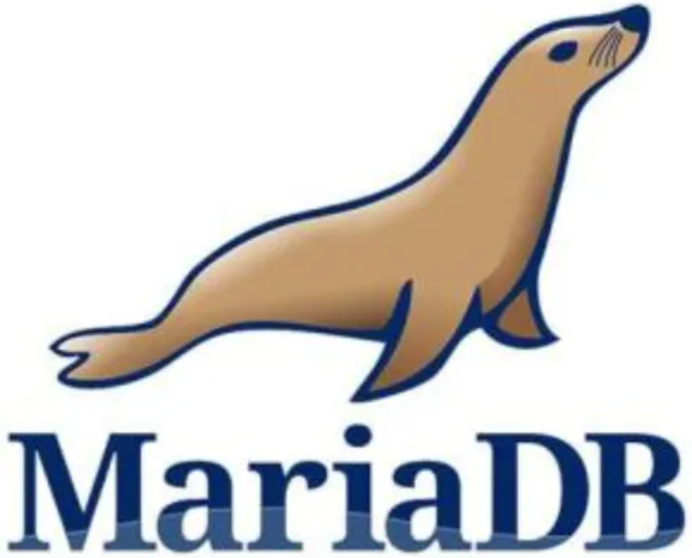

首页 > 编程笔记
MariaDB数据库简介
MariaDB 数据库管理系统是 MySQL 数据库的一个分支，主要由开源社区维护，采用 GPL 授权许可。
开发这个 MariaDB 数据库分支的可能原因之一是：Oracle 公司收购了 MySQL 之后，有将 MySQL 闭源的潜在风险，因此 MySQL 开源社区采用分支的方式来避开这个风险。
开发 MariaDB 数据库的目的是完全兼容 MySQL 数据库，包括 API 和命令行，使之能够轻松地成为 MySQL 的替代品。
在存储引擎方面，MariaDB 使用 XtraDB 来代替 MySQL 的 InnoDB。
MariaDB 由 MySQL 的创始人 Michael Widenius 主导开发，他早前曾以 10 亿美元的价格，将自己创建的公司 MySQL AB 卖给 Sun，此后，随着 Sun 被甲骨文收购，MySQL 的所有权也落入 Oracle 的手中。
MariaDB 数据库的名称来自 MySQL 的创始人 Michael Widenius 的女儿 Maria 的名字。
MariaDB 基于事务的 Maria 存储引擎，替换了 MySQL 的 MyISAM 存储引擎，使用 Percona 的 XtraDB 替换了 MySQL 的 InnoDB 存储引擎。
MariaDB 数据库的早期版本，均依照 MySQL 的版本发行。因此，使用 MariaDB 的人都会从 MySQL 中了解到 MariaDB 的相关功能，学习 MySQL 数据库的人，也可以轻松上手掌握 MariaDB 数据库。

开发这个 MariaDB 数据库分支的可能原因之一是：Oracle 公司收购了 MySQL 之后，有将 MySQL 闭源的潜在风险，因此 MySQL 开源社区采用分支的方式来避开这个风险。
开发 MariaDB 数据库的目的是完全兼容 MySQL 数据库，包括 API 和命令行，使之能够轻松地成为 MySQL 的替代品。
在存储引擎方面，MariaDB 使用 XtraDB 来代替 MySQL 的 InnoDB。
MariaDB 由 MySQL 的创始人 Michael Widenius 主导开发，他早前曾以 10 亿美元的价格，将自己创建的公司 MySQL AB 卖给 Sun，此后，随着 Sun 被甲骨文收购，MySQL 的所有权也落入 Oracle 的手中。
MariaDB 数据库的名称来自 MySQL 的创始人 Michael Widenius 的女儿 Maria 的名字。
MariaDB 基于事务的 Maria 存储引擎，替换了 MySQL 的 MyISAM 存储引擎，使用 Percona 的 XtraDB 替换了 MySQL 的 InnoDB 存储引擎。
MariaDB 数据库的早期版本，均依照 MySQL 的版本发行。因此，使用 MariaDB 的人都会从 MySQL 中了解到 MariaDB 的相关功能，学习 MySQL 数据库的人，也可以轻松上手掌握 MariaDB 数据库。
关注公众号「站长严长生」，在手机上阅读所有教程，随时随地都能学习。内含一款搜索神器，免费下载全网书籍和视频。

微信扫码关注公众号